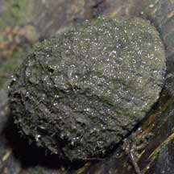
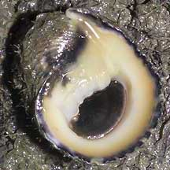

|
|
| shelled snails text index | photo index |
| Phylum Mollusca > Class Gastropoda > Family Neritidae |
| Flat-spire
nerite snail Nerita planospira Family Neritidae updated Sep 2020 Where seen? This sturdy nerite was seen once at Lim Chu Kang mangroves. The study by Tan & Clements (2008) found this snail on mangrove tree trunks and roots, muddy rocks, trash (e.g., discarded rubber tires and wooden planks), and monsoon canal walls. Sites included: Sarimbun, Lim Chu Kang, Kranji, Pulau Ubin, Pulau Ketam, Pasir Ris, Sungei Changi, Marina East and Tanjong Penjuru. According to Tan & Clements, this snail appears to be moderately uncommon and occurs in relatively low densities. The largest local population of Nerita planospira appears to be located in the mangroves of Pulau Ubin. Features: About 2cm. Shell thick heavy, hemispherical with a sunken spire. Rough thick cords on the shell, the earlier whorls of the shell is flattened thus giving its common name (Planus means 'flat', spira refer to 'spiral'). It has a thin, brown 'skin' (periostracum) which covers a pink shell with dark bands and patches. The flat underside white or beige with a dark blotch at the edge. Small notched 'teeth' (4-5) on the straight edge at the shell opening. Operculum thick, smooth, glossy, grey or black. Body black. |
 Lim Chu Kang, Aug 05 |
 Lim Chu Kang, Aug 05 |
| Human uses: It is occasionally
collected for food and shellcraft. Status and threats: This snail is listed as 'Vulnerable' in the Red List of threatened animals of Singapore. According to the Singapore Red Data Book: "Highly abundant in the 1960's, populations have declined drastically due to the loss of mature mangrove habitats." |
| Flat-spire nerite snails on Singapore shores |
On wildsingapore
flickr
|
Links
|